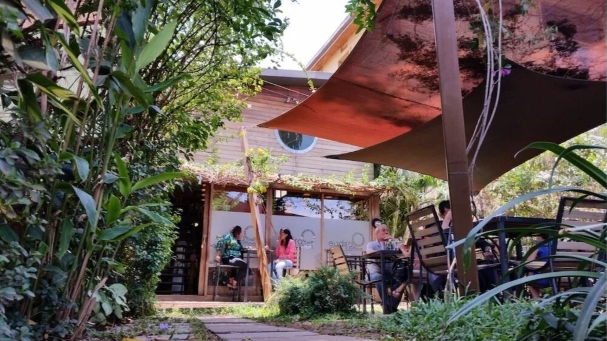

Muyenga (Tank Hill)
Tank Hill Park, Tank Hill Road, Muyenga, Kampala
Mon-Sun 7AM-10PM
Tank Hill Park, Tank Hill Road, Muyenga, Kampala
Mon-Sun 7AM-10PM

Plot 23B Cooper Road, Kisimenti, Kololo, Kampala
Mon-Sun 7AM-10PM

Plot 8 Kintu Road, Nakasero, Kampala
Mon-Sun 7AM-10PM
The Academy page names a new space at The Orchid, McKinnon Road [to confirm].
Standard Chartered Bank (Main), Plot 05 Speke Road, Kampala
Mon-Fri 9AM-5PM, Sat 9AM-1PM
The Surgery (Lobby), Naggulu Drive, Kampala
Mon-Sun 7AM-5PM
Block 250 Plot 602, Kyadondo Road, Kampala
Mon-Sun 7AM-9PM
Plot 45/47 A1, Spring Road, Bugolobi, Kampala
Mon-Fri 6AM-10PM, Sat-Sun 6AM-9PM
Plot 30A, Kibira (Mulwana) Road, Industrial Area, Kampala
Mon-Sat 7AM-7PM
Shell Buwama, Jalia City, Masaka-Mbarara Highway
Mon-Sun 7AM-9PM


Sipi Trading Centre, Kapchorwa District
Mon-Sun 7AM-9PM
Kara-Tunga Arts and Tours, Plot 80 Independence Avenue, Moroto
Mon-Sun 8AM-7PM
Mubende-Fort Portal Road, Fort Portal
Mon-Sun 7AM-8PM
Endiro cafés in Kampala. Choose a café to see it on the map.
Write to us, or call the café you want to visit. For wholesale and work, see the pages below.